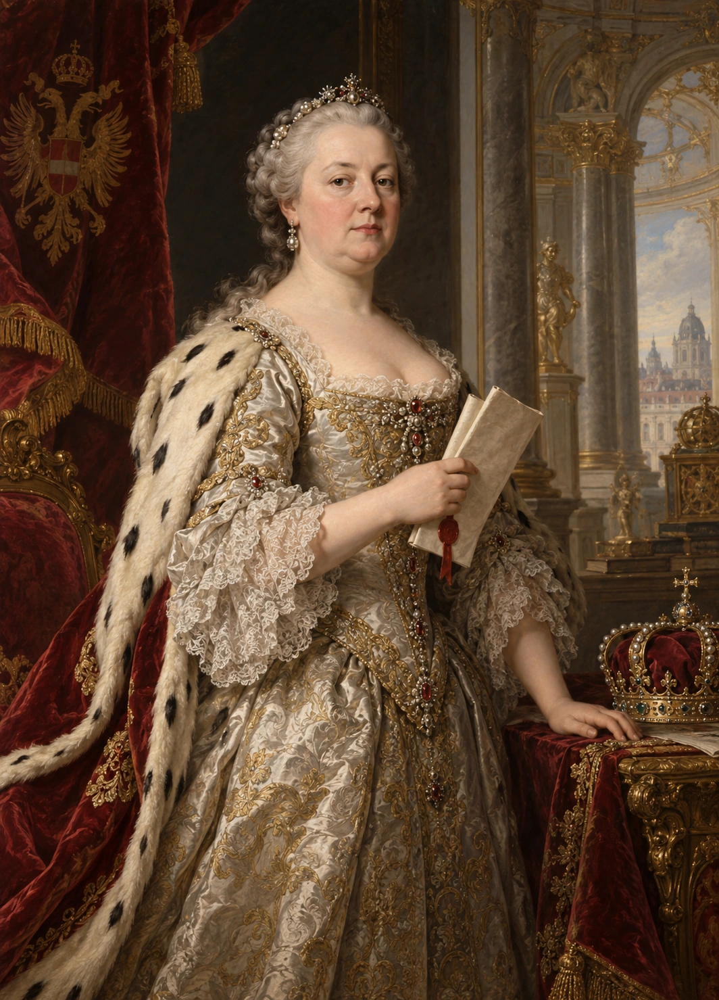

Print at 100%, not “fit”. Trim dimensions are provisional. This home-print kit uses trim lines and a 3 mm safe area. Commercial production needs a supplier dieline, 3 mm image bleed and approved front/back alignment.
Contains 52 Nobles, four Laws, twelve Crises and 24 painting fragments. Original portraits and four existing scene artworks are preserved; the paintings are prototype source-art reuse, not newly verified historical compositions.
Use opaque identical Noble backs and identical History backs. Sleeves can supply opacity. A complete selected module stays together; no permanent collection trades.
Human paper adjudication, material handling, source/editorial clearance and supplier proofs remain outstanding. The user deferred the early paper-play gate to enable digital prototype implementation.
alba · noble
Kenneth MacAlpin
Founder · Noble · Alpin
Actions cost 1 seal. Hand: Recruit into your Court if this is your Dynasty; Recall a rival's Court Noble of this Dynasty; Block a Recall against a Noble of this Dynasty. Hand: Trade; Lend when a Crisis asks; discard to Cover a painting fragment. Court: Withdraw to your hand; Challenge a Crisis if in your Bloodline and ready.
alba · noble
St Margaret
Queen · marriage role · Dunkeld
Actions cost 1 seal. Hand: Recruit into your Court if this is your Dynasty; Recall a rival's Court Noble of this Dynasty; Block a Recall against a Noble of this Dynasty. Hand: Trade; Lend when a Crisis asks; discard to Cover a painting fragment. Court: Withdraw to your hand; Challenge a Crisis if in your Bloodline and ready. Marry: Pair this unmarried Queen in your Court with an unpaired foreign Noble in your hand or Court. This Queen must be of your Dynasty.
alba · noble
Malcolm III
Noble · Dunkeld
Actions cost 1 seal. Hand: Recruit into your Court if this is your Dynasty; Recall a rival's Court Noble of this Dynasty; Block a Recall against a Noble of this Dynasty. Hand: Trade; Lend when a Crisis asks; discard to Cover a painting fragment. Court: Withdraw to your hand; Challenge a Crisis if in your Bloodline and ready.
alba · noble
David I
Noble · Dunkeld
Actions cost 1 seal. Hand: Recruit into your Court if this is your Dynasty; Recall a rival's Court Noble of this Dynasty; Block a Recall against a Noble of this Dynasty. Hand: Trade; Lend when a Crisis asks; discard to Cover a painting fragment. Court: Withdraw to your hand; Challenge a Crisis if in your Bloodline and ready.
alba · noble
William the Lion
Noble · Dunkeld
Actions cost 1 seal. Hand: Recruit into your Court if this is your Dynasty; Recall a rival's Court Noble of this Dynasty; Block a Recall against a Noble of this Dynasty. Hand: Trade; Lend when a Crisis asks; discard to Cover a painting fragment. Court: Withdraw to your hand; Challenge a Crisis if in your Bloodline and ready.
alba · noble
Alexander II
Noble · Dunkeld
Actions cost 1 seal. Hand: Recruit into your Court if this is your Dynasty; Recall a rival's Court Noble of this Dynasty; Block a Recall against a Noble of this Dynasty. Hand: Trade; Lend when a Crisis asks; discard to Cover a painting fragment. Court: Withdraw to your hand; Challenge a Crisis if in your Bloodline and ready.
alba · noble
Alexander III
Noble · Dunkeld
Actions cost 1 seal. Hand: Recruit into your Court if this is your Dynasty; Recall a rival's Court Noble of this Dynasty; Block a Recall against a Noble of this Dynasty. Hand: Trade; Lend when a Crisis asks; discard to Cover a painting fragment. Court: Withdraw to your hand; Challenge a Crisis if in your Bloodline and ready.
alba · noble
Robert the Bruce
Noble · Bruce–Stewart
Actions cost 1 seal. Hand: Recruit into your Court if this is your Dynasty; Recall a rival's Court Noble of this Dynasty; Block a Recall against a Noble of this Dynasty. Hand: Trade; Lend when a Crisis asks; discard to Cover a painting fragment. Court: Withdraw to your hand; Challenge a Crisis if in your Bloodline and ready.
alba · noble
Marjorie Bruce
Queen · marriage role · Bruce–Stewart
Actions cost 1 seal. Hand: Recruit into your Court if this is your Dynasty; Recall a rival's Court Noble of this Dynasty; Block a Recall against a Noble of this Dynasty. Hand: Trade; Lend when a Crisis asks; discard to Cover a painting fragment. Court: Withdraw to your hand; Challenge a Crisis if in your Bloodline and ready. Marry: Pair this unmarried Queen in your Court with an unpaired foreign Noble in your hand or Court. This Queen must be of your Dynasty.
alba · noble
Robert II
Noble · Bruce–Stewart
Actions cost 1 seal. Hand: Recruit into your Court if this is your Dynasty; Recall a rival's Court Noble of this Dynasty; Block a Recall against a Noble of this Dynasty. Hand: Trade; Lend when a Crisis asks; discard to Cover a painting fragment. Court: Withdraw to your hand; Challenge a Crisis if in your Bloodline and ready.
alba · noble
Duncan I
Noble · Dunkeld
Actions cost 1 seal. Hand: Recruit into your Court if this is your Dynasty; Recall a rival's Court Noble of this Dynasty; Block a Recall against a Noble of this Dynasty. Hand: Trade; Lend when a Crisis asks; discard to Cover a painting fragment. Court: Withdraw to your hand; Challenge a Crisis if in your Bloodline and ready.
alba · noble
Constantine II
Noble · Alpin
Actions cost 1 seal. Hand: Recruit into your Court if this is your Dynasty; Recall a rival's Court Noble of this Dynasty; Block a Recall against a Noble of this Dynasty. Hand: Trade; Lend when a Crisis asks; discard to Cover a painting fragment. Court: Withdraw to your hand; Challenge a Crisis if in your Bloodline and ready.
alba · noble
Matilda of Scotland
Queen · marriage role · Dunkeld
Actions cost 1 seal. Hand: Recruit into your Court if this is your Dynasty; Recall a rival's Court Noble of this Dynasty; Block a Recall against a Noble of this Dynasty. Hand: Trade; Lend when a Crisis asks; discard to Cover a painting fragment. Court: Withdraw to your hand; Challenge a Crisis if in your Bloodline and ready. Marry: Pair this unmarried Queen in your Court with an unpaired foreign Noble in your hand or Court. This Queen must be of your Dynasty.
plantagenet · noble
Henry II
Founder · Noble
Actions cost 1 seal. Hand: Recruit into your Court if this is your Dynasty; Recall a rival's Court Noble of this Dynasty; Block a Recall against a Noble of this Dynasty. Hand: Trade; Lend when a Crisis asks; discard to Cover a painting fragment. Court: Withdraw to your hand; Challenge a Crisis if in your Bloodline and ready.
plantagenet · noble
Eleanor of Aquitaine
Queen · marriage role
Actions cost 1 seal. Hand: Recruit into your Court if this is your Dynasty; Recall a rival's Court Noble of this Dynasty; Block a Recall against a Noble of this Dynasty. Hand: Trade; Lend when a Crisis asks; discard to Cover a painting fragment. Court: Withdraw to your hand; Challenge a Crisis if in your Bloodline and ready. Marry: Pair this unmarried Queen in your Court with an unpaired foreign Noble in your hand or Court. This Queen must be of your Dynasty.
plantagenet · noble
Richard I
Noble
Actions cost 1 seal. Hand: Recruit into your Court if this is your Dynasty; Recall a rival's Court Noble of this Dynasty; Block a Recall against a Noble of this Dynasty. Hand: Trade; Lend when a Crisis asks; discard to Cover a painting fragment. Court: Withdraw to your hand; Challenge a Crisis if in your Bloodline and ready.
plantagenet · noble
John
Noble
Actions cost 1 seal. Hand: Recruit into your Court if this is your Dynasty; Recall a rival's Court Noble of this Dynasty; Block a Recall against a Noble of this Dynasty. Hand: Trade; Lend when a Crisis asks; discard to Cover a painting fragment. Court: Withdraw to your hand; Challenge a Crisis if in your Bloodline and ready.
plantagenet · noble
Henry III
Noble
Actions cost 1 seal. Hand: Recruit into your Court if this is your Dynasty; Recall a rival's Court Noble of this Dynasty; Block a Recall against a Noble of this Dynasty. Hand: Trade; Lend when a Crisis asks; discard to Cover a painting fragment. Court: Withdraw to your hand; Challenge a Crisis if in your Bloodline and ready.
plantagenet · noble
Edward I
Noble
Actions cost 1 seal. Hand: Recruit into your Court if this is your Dynasty; Recall a rival's Court Noble of this Dynasty; Block a Recall against a Noble of this Dynasty. Hand: Trade; Lend when a Crisis asks; discard to Cover a painting fragment. Court: Withdraw to your hand; Challenge a Crisis if in your Bloodline and ready.
plantagenet · noble
Edward II
Noble
Actions cost 1 seal. Hand: Recruit into your Court if this is your Dynasty; Recall a rival's Court Noble of this Dynasty; Block a Recall against a Noble of this Dynasty. Hand: Trade; Lend when a Crisis asks; discard to Cover a painting fragment. Court: Withdraw to your hand; Challenge a Crisis if in your Bloodline and ready.
plantagenet · noble
Edward III
Noble
Actions cost 1 seal. Hand: Recruit into your Court if this is your Dynasty; Recall a rival's Court Noble of this Dynasty; Block a Recall against a Noble of this Dynasty. Hand: Trade; Lend when a Crisis asks; discard to Cover a painting fragment. Court: Withdraw to your hand; Challenge a Crisis if in your Bloodline and ready.
plantagenet · noble
Philippa of Hainault
Queen · marriage role
Actions cost 1 seal. Hand: Recruit into your Court if this is your Dynasty; Recall a rival's Court Noble of this Dynasty; Block a Recall against a Noble of this Dynasty. Hand: Trade; Lend when a Crisis asks; discard to Cover a painting fragment. Court: Withdraw to your hand; Challenge a Crisis if in your Bloodline and ready. Marry: Pair this unmarried Queen in your Court with an unpaired foreign Noble in your hand or Court. This Queen must be of your Dynasty.
plantagenet · noble
Richard II
Noble
Actions cost 1 seal. Hand: Recruit into your Court if this is your Dynasty; Recall a rival's Court Noble of this Dynasty; Block a Recall against a Noble of this Dynasty. Hand: Trade; Lend when a Crisis asks; discard to Cover a painting fragment. Court: Withdraw to your hand; Challenge a Crisis if in your Bloodline and ready.
plantagenet · noble
Edward the Black Prince
Noble
Actions cost 1 seal. Hand: Recruit into your Court if this is your Dynasty; Recall a rival's Court Noble of this Dynasty; Block a Recall against a Noble of this Dynasty. Hand: Trade; Lend when a Crisis asks; discard to Cover a painting fragment. Court: Withdraw to your hand; Challenge a Crisis if in your Bloodline and ready.
plantagenet · noble
Joan of Kent
Queen · marriage role
Actions cost 1 seal. Hand: Recruit into your Court if this is your Dynasty; Recall a rival's Court Noble of this Dynasty; Block a Recall against a Noble of this Dynasty. Hand: Trade; Lend when a Crisis asks; discard to Cover a painting fragment. Court: Withdraw to your hand; Challenge a Crisis if in your Bloodline and ready. Marry: Pair this unmarried Queen in your Court with an unpaired foreign Noble in your hand or Court. This Queen must be of your Dynasty.
plantagenet · noble
Isabella of France
Queen · marriage role
Actions cost 1 seal. Hand: Recruit into your Court if this is your Dynasty; Recall a rival's Court Noble of this Dynasty; Block a Recall against a Noble of this Dynasty. Hand: Trade; Lend when a Crisis asks; discard to Cover a painting fragment. Court: Withdraw to your hand; Challenge a Crisis if in your Bloodline and ready. Marry: Pair this unmarried Queen in your Court with an unpaired foreign Noble in your hand or Court. This Queen must be of your Dynasty.
tudor · noble
Henry VII
Founder · Noble
Actions cost 1 seal. Hand: Recruit into your Court if this is your Dynasty; Recall a rival's Court Noble of this Dynasty; Block a Recall against a Noble of this Dynasty. Hand: Trade; Lend when a Crisis asks; discard to Cover a painting fragment. Court: Withdraw to your hand; Challenge a Crisis if in your Bloodline and ready.
tudor · noble
Elizabeth I
Queen · marriage role
Actions cost 1 seal. Hand: Recruit into your Court if this is your Dynasty; Recall a rival's Court Noble of this Dynasty; Block a Recall against a Noble of this Dynasty. Hand: Trade; Lend when a Crisis asks; discard to Cover a painting fragment. Court: Withdraw to your hand; Challenge a Crisis if in your Bloodline and ready. Marry: Pair this unmarried Queen in your Court with an unpaired foreign Noble in your hand or Court. This Queen must be of your Dynasty.
tudor · noble
Henry VIII
Noble
Actions cost 1 seal. Hand: Recruit into your Court if this is your Dynasty; Recall a rival's Court Noble of this Dynasty; Block a Recall against a Noble of this Dynasty. Hand: Trade; Lend when a Crisis asks; discard to Cover a painting fragment. Court: Withdraw to your hand; Challenge a Crisis if in your Bloodline and ready.
tudor · noble
Mary I
Queen · marriage role
Actions cost 1 seal. Hand: Recruit into your Court if this is your Dynasty; Recall a rival's Court Noble of this Dynasty; Block a Recall against a Noble of this Dynasty. Hand: Trade; Lend when a Crisis asks; discard to Cover a painting fragment. Court: Withdraw to your hand; Challenge a Crisis if in your Bloodline and ready. Marry: Pair this unmarried Queen in your Court with an unpaired foreign Noble in your hand or Court. This Queen must be of your Dynasty.
tudor · noble
Edward VI
Noble
Actions cost 1 seal. Hand: Recruit into your Court if this is your Dynasty; Recall a rival's Court Noble of this Dynasty; Block a Recall against a Noble of this Dynasty. Hand: Trade; Lend when a Crisis asks; discard to Cover a painting fragment. Court: Withdraw to your hand; Challenge a Crisis if in your Bloodline and ready.
tudor · noble
Elizabeth of York
Queen · marriage role
Actions cost 1 seal. Hand: Recruit into your Court if this is your Dynasty; Recall a rival's Court Noble of this Dynasty; Block a Recall against a Noble of this Dynasty. Hand: Trade; Lend when a Crisis asks; discard to Cover a painting fragment. Court: Withdraw to your hand; Challenge a Crisis if in your Bloodline and ready. Marry: Pair this unmarried Queen in your Court with an unpaired foreign Noble in your hand or Court. This Queen must be of your Dynasty.
tudor · noble
Margaret Beaufort
Noble
Actions cost 1 seal. Hand: Recruit into your Court if this is your Dynasty; Recall a rival's Court Noble of this Dynasty; Block a Recall against a Noble of this Dynasty. Hand: Trade; Lend when a Crisis asks; discard to Cover a painting fragment. Court: Withdraw to your hand; Challenge a Crisis if in your Bloodline and ready.
tudor · noble
Edmund Tudor
Noble
Actions cost 1 seal. Hand: Recruit into your Court if this is your Dynasty; Recall a rival's Court Noble of this Dynasty; Block a Recall against a Noble of this Dynasty. Hand: Trade; Lend when a Crisis asks; discard to Cover a painting fragment. Court: Withdraw to your hand; Challenge a Crisis if in your Bloodline and ready.
tudor · noble
Jasper Tudor
Noble
Actions cost 1 seal. Hand: Recruit into your Court if this is your Dynasty; Recall a rival's Court Noble of this Dynasty; Block a Recall against a Noble of this Dynasty. Hand: Trade; Lend when a Crisis asks; discard to Cover a painting fragment. Court: Withdraw to your hand; Challenge a Crisis if in your Bloodline and ready.
tudor · noble
Margaret Tudor
Queen · marriage role
Actions cost 1 seal. Hand: Recruit into your Court if this is your Dynasty; Recall a rival's Court Noble of this Dynasty; Block a Recall against a Noble of this Dynasty. Hand: Trade; Lend when a Crisis asks; discard to Cover a painting fragment. Court: Withdraw to your hand; Challenge a Crisis if in your Bloodline and ready. Marry: Pair this unmarried Queen in your Court with an unpaired foreign Noble in your hand or Court. This Queen must be of your Dynasty.
tudor · noble
Arthur Tudor
Noble
Actions cost 1 seal. Hand: Recruit into your Court if this is your Dynasty; Recall a rival's Court Noble of this Dynasty; Block a Recall against a Noble of this Dynasty. Hand: Trade; Lend when a Crisis asks; discard to Cover a painting fragment. Court: Withdraw to your hand; Challenge a Crisis if in your Bloodline and ready.
tudor · noble
Owen Tudor
Noble
Actions cost 1 seal. Hand: Recruit into your Court if this is your Dynasty; Recall a rival's Court Noble of this Dynasty; Block a Recall against a Noble of this Dynasty. Hand: Trade; Lend when a Crisis asks; discard to Cover a painting fragment. Court: Withdraw to your hand; Challenge a Crisis if in your Bloodline and ready.
tudor · noble
Catherine of Aragon
Queen · marriage role
Actions cost 1 seal. Hand: Recruit into your Court if this is your Dynasty; Recall a rival's Court Noble of this Dynasty; Block a Recall against a Noble of this Dynasty. Hand: Trade; Lend when a Crisis asks; discard to Cover a painting fragment. Court: Withdraw to your hand; Challenge a Crisis if in your Bloodline and ready. Marry: Pair this unmarried Queen in your Court with an unpaired foreign Noble in your hand or Court. This Queen must be of your Dynasty.
habsburg · noble
Rudolf I
Founder · Noble
Actions cost 1 seal. Hand: Recruit into your Court if this is your Dynasty; Recall a rival's Court Noble of this Dynasty; Block a Recall against a Noble of this Dynasty. Hand: Trade; Lend when a Crisis asks; discard to Cover a painting fragment. Court: Withdraw to your hand; Challenge a Crisis if in your Bloodline and ready.

habsburg · noble
Maria Theresa
Queen · marriage role
Actions cost 1 seal. Hand: Recruit into your Court if this is your Dynasty; Recall a rival's Court Noble of this Dynasty; Block a Recall against a Noble of this Dynasty. Hand: Trade; Lend when a Crisis asks; discard to Cover a painting fragment. Court: Withdraw to your hand; Challenge a Crisis if in your Bloodline and ready. Marry: Pair this unmarried Queen in your Court with an unpaired foreign Noble in your hand or Court. This Queen must be of your Dynasty.
habsburg · noble
Maximilian I
Noble
Actions cost 1 seal. Hand: Recruit into your Court if this is your Dynasty; Recall a rival's Court Noble of this Dynasty; Block a Recall against a Noble of this Dynasty. Hand: Trade; Lend when a Crisis asks; discard to Cover a painting fragment. Court: Withdraw to your hand; Challenge a Crisis if in your Bloodline and ready.
habsburg · noble
Charles V
Noble
Actions cost 1 seal. Hand: Recruit into your Court if this is your Dynasty; Recall a rival's Court Noble of this Dynasty; Block a Recall against a Noble of this Dynasty. Hand: Trade; Lend when a Crisis asks; discard to Cover a painting fragment. Court: Withdraw to your hand; Challenge a Crisis if in your Bloodline and ready.
habsburg · noble
Philip I
Noble
Actions cost 1 seal. Hand: Recruit into your Court if this is your Dynasty; Recall a rival's Court Noble of this Dynasty; Block a Recall against a Noble of this Dynasty. Hand: Trade; Lend when a Crisis asks; discard to Cover a painting fragment. Court: Withdraw to your hand; Challenge a Crisis if in your Bloodline and ready.
habsburg · noble
Ferdinand I
Noble
Actions cost 1 seal. Hand: Recruit into your Court if this is your Dynasty; Recall a rival's Court Noble of this Dynasty; Block a Recall against a Noble of this Dynasty. Hand: Trade; Lend when a Crisis asks; discard to Cover a painting fragment. Court: Withdraw to your hand; Challenge a Crisis if in your Bloodline and ready.
habsburg · noble
Philip II
Noble
Actions cost 1 seal. Hand: Recruit into your Court if this is your Dynasty; Recall a rival's Court Noble of this Dynasty; Block a Recall against a Noble of this Dynasty. Hand: Trade; Lend when a Crisis asks; discard to Cover a painting fragment. Court: Withdraw to your hand; Challenge a Crisis if in your Bloodline and ready.
habsburg · noble
Anna of Austria
Queen · marriage role
Actions cost 1 seal. Hand: Recruit into your Court if this is your Dynasty; Recall a rival's Court Noble of this Dynasty; Block a Recall against a Noble of this Dynasty. Hand: Trade; Lend when a Crisis asks; discard to Cover a painting fragment. Court: Withdraw to your hand; Challenge a Crisis if in your Bloodline and ready. Marry: Pair this unmarried Queen in your Court with an unpaired foreign Noble in your hand or Court. This Queen must be of your Dynasty.
habsburg · noble
Margaret of Austria
Queen · marriage role
Actions cost 1 seal. Hand: Recruit into your Court if this is your Dynasty; Recall a rival's Court Noble of this Dynasty; Block a Recall against a Noble of this Dynasty. Hand: Trade; Lend when a Crisis asks; discard to Cover a painting fragment. Court: Withdraw to your hand; Challenge a Crisis if in your Bloodline and ready. Marry: Pair this unmarried Queen in your Court with an unpaired foreign Noble in your hand or Court. This Queen must be of your Dynasty.
habsburg · noble
Ferdinand II
Noble
Actions cost 1 seal. Hand: Recruit into your Court if this is your Dynasty; Recall a rival's Court Noble of this Dynasty; Block a Recall against a Noble of this Dynasty. Hand: Trade; Lend when a Crisis asks; discard to Cover a painting fragment. Court: Withdraw to your hand; Challenge a Crisis if in your Bloodline and ready.
habsburg · noble
Leopold I
Noble
Actions cost 1 seal. Hand: Recruit into your Court if this is your Dynasty; Recall a rival's Court Noble of this Dynasty; Block a Recall against a Noble of this Dynasty. Hand: Trade; Lend when a Crisis asks; discard to Cover a painting fragment. Court: Withdraw to your hand; Challenge a Crisis if in your Bloodline and ready.
habsburg · noble
Charles VI
Noble
Actions cost 1 seal. Hand: Recruit into your Court if this is your Dynasty; Recall a rival's Court Noble of this Dynasty; Block a Recall against a Noble of this Dynasty. Hand: Trade; Lend when a Crisis asks; discard to Cover a painting fragment. Court: Withdraw to your hand; Challenge a Crisis if in your Bloodline and ready.
habsburg · noble
Mary of Hungary
Queen · marriage role
Actions cost 1 seal. Hand: Recruit into your Court if this is your Dynasty; Recall a rival's Court Noble of this Dynasty; Block a Recall against a Noble of this Dynasty. Hand: Trade; Lend when a Crisis asks; discard to Cover a painting fragment. Court: Withdraw to your hand; Challenge a Crisis if in your Bloodline and ready. Marry: Pair this unmarried Queen in your Court with an unpaired foreign Noble in your hand or Court. This Queen must be of your Dynasty.
alba · law
Recognition of the Kindreds
Claim the Crown: Have 3 Court Nobles of your Dynasty, including your Ruler. Choose 2 other Court Nobles of your Dynasty from different branches as heirs. Keep your Ruler and at least 1 named heir until the Ruler changes. In 1 round, at its start: Retire your Ruler. Crown a remaining named heir. Win: Keep your new Ruler in your Bloodline for 1 full round. Fail: Lose the Crown if a required Noble or marriage is lost.
plantagenet · law
The Charter
Claim the Crown: Have 3 Court Nobles of your Dynasty, including your Ruler. Choose 1 other Court Noble of your Dynasty as heir. Choose a different Court Noble of your Dynasty, not your Ruler, as Witness. Keep your Ruler, heir and Witness until the Ruler changes. In 1 round, at its start: Retire your Ruler. Crown a remaining named heir. Win: Keep your new Ruler and Witness in your Bloodline for 1 full round. Fail: Lose the Crown if a required Noble or marriage is lost.
tudor · law
The Act of Succession
Claim the Crown: Have 3 Court Nobles of your Dynasty, including your Ruler. Choose 1 hand Noble of your Dynasty as heir. Set the heir aside face down. Keep your Ruler and hidden heir until the Ruler changes. In 1 round, at its start: Reveal your heir. Retire your Ruler. Crown a remaining named heir. Win: Keep your new Ruler in your Bloodline for 1 full round. Fail: Lose the Crown if a required Noble or marriage is lost. Return any hidden heir face up to your hand.
habsburg · law
The Marriage Settlement
Claim the Crown: Have 3 Court Nobles of your Dynasty, including your Ruler. Choose 1 foreign Court Noble married to your Queen as heir. The Queen must be of your Dynasty, not your Ruler. Keep your Ruler, heir and their marriage until the Ruler changes. In 1 round, at its start: Retire your Ruler. Crown a remaining named heir. Win: Keep your new Ruler in your Bloodline and the same marriage intact for 1 full round. Fail: Lose the Crown if a required Noble or marriage is lost.
alba · interregnum
Contested Recognition
Prevent: Each player Lends 1 hand Noble of their Dynasty using Help. Starts at round end unless prevented. While active: No player may Claim the Crown. End early: Complete the Prevent condition. Earlier help still counts. Ends at round end, after 1 more round.
alba · interregnum
Border Rising
Prevent: Together, Challenge with 2 different ready Court Nobles in your Bloodline, one per action. Starts at round end unless prevented. At round start: Each player with a Ruler chooses 1 other Court Noble in their Bloodline, if able. Retire those Nobles to The Past together. Ends at round end, after 1 more round.
alba · interregnum
A Broken Recognition
Prevent: At reveal, mark players with foreign Court Nobles outside their Bloodline. Each must Marry one of those Nobles. Starts at round end unless prevented. When this starts: Return all foreign Court Nobles outside their Bloodlines to their controllers' hands together. Then end this event.
plantagenet · interregnum
The Barons’ Terms
Prevent: Each player turns 1 ready Court Noble of their Dynasty sideways using Help. Starts at round end unless prevented. While active: To Block, also turn 1 ready Court Noble of your Dynasty sideways. Ends at round end, after 1 more round.
plantagenet · interregnum
A Disputed Charter
Prevent: Together, Challenge with 2 different ready Court Nobles in your Bloodline, one per action. Starts at round end unless prevented. When this starts: The Crown holder chooses 1 Court Noble in their Bloodline other than their Ruler, if able. Return that Noble to their hand. Then end this event.
plantagenet · interregnum
Closed Roads
Prevent: Together, Lend 2 hand Nobles of different Dynasties using Help, one per action. Starts at round end unless prevented. While active: Use the Draw action only with an empty hand. End early: Complete the Prevent condition. Earlier help still counts. Ends at round end, after 1 more round.
tudor · interregnum
The Unsettled Church
Prevent: Each player Lends 1 hand Noble using Help. Starts at round end unless prevented. While active: No player may Marry. Ends at round end, after 1 more round.
tudor · interregnum
A Rival Proclamation
Prevent: Together, Challenge with 2 different ready Court Nobles in your Bloodline, one per action. Starts at round end unless prevented. When this starts: Each player chooses 1 Court Noble of their Dynasty other than their Ruler, if able. Return those Nobles to their controllers' hands together. Then end this event.
tudor · interregnum
The Open Record
Prevent: Each player completes Trade or Cover after this is revealed. A Trade counts for both players. Starts at round end unless prevented. At round start: Reveal 1 extra History card. Ends at round end, after 1 more round.
habsburg · interregnum
The Divided Inheritance
Prevent: At reveal, mark players with marriages. Each marked player Lends 1 hand Noble using Help. Starts at round end unless prevented. When this starts: Each player chooses 1 marriage they control, if able. Break those marriages together. Then end this event.
habsburg · interregnum
War of the Succession
Prevent: Together, Challenge with 2 different ready Court Nobles in your Bloodline, one per action. Starts at round end unless prevented. While active: When a Crown claim must change Ruler, it fails. Lose that Crown claim; keep the current Ruler. End early: Together, Challenge with 2 different ready Court Nobles in your Bloodline, one per action. Earlier help still counts. Ends at round end, after 1 more round.
habsburg · interregnum
The Imperial Settlement
Prevent: Together, Lend 2 hand Nobles of different Dynasties using Help, one per action. Starts at round end unless prevented. At round start: Each player with no marriage chooses 1 hand Noble, if able. Lend those Nobles together. These loans do not count as Help. End early: Complete the Prevent condition. Earlier help still counts. Ends at round end, after 1 more round.
alba · fragment
The Kindreds at Scone · 1
Reveal: Place this fragment in slot 1 of its painting. If 6 fragments of this painting are uncovered, Eudoxia wins immediately. All players lose.
alba · fragment
The Kindreds at Scone · 2
Reveal: Place this fragment in slot 2 of its painting. If 6 fragments of this painting are uncovered, Eudoxia wins immediately. All players lose.
alba · fragment
The Kindreds at Scone · 3
Reveal: Place this fragment in slot 3 of its painting. If 6 fragments of this painting are uncovered, Eudoxia wins immediately. All players lose.
alba · fragment
The Kindreds at Scone · 4
Reveal: Place this fragment in slot 4 of its painting. If 6 fragments of this painting are uncovered, Eudoxia wins immediately. All players lose.
alba · fragment
The Kindreds at Scone · 5
Reveal: Place this fragment in slot 5 of its painting. If 6 fragments of this painting are uncovered, Eudoxia wins immediately. All players lose.
alba · fragment
The Kindreds at Scone · 6
Reveal: Place this fragment in slot 6 of its painting. If 6 fragments of this painting are uncovered, Eudoxia wins immediately. All players lose.
plantagenet · fragment
The Witness to the Charter · 1
Reveal: Place this fragment in slot 1 of its painting. If 6 fragments of this painting are uncovered, Eudoxia wins immediately. All players lose.
plantagenet · fragment
The Witness to the Charter · 2
Reveal: Place this fragment in slot 2 of its painting. If 6 fragments of this painting are uncovered, Eudoxia wins immediately. All players lose.
plantagenet · fragment
The Witness to the Charter · 3
Reveal: Place this fragment in slot 3 of its painting. If 6 fragments of this painting are uncovered, Eudoxia wins immediately. All players lose.
plantagenet · fragment
The Witness to the Charter · 4
Reveal: Place this fragment in slot 4 of its painting. If 6 fragments of this painting are uncovered, Eudoxia wins immediately. All players lose.
plantagenet · fragment
The Witness to the Charter · 5
Reveal: Place this fragment in slot 5 of its painting. If 6 fragments of this painting are uncovered, Eudoxia wins immediately. All players lose.
plantagenet · fragment
The Witness to the Charter · 6
Reveal: Place this fragment in slot 6 of its painting. If 6 fragments of this painting are uncovered, Eudoxia wins immediately. All players lose.
tudor · fragment
The Sealed Intention · 1
Reveal: Place this fragment in slot 1 of its painting. If 6 fragments of this painting are uncovered, Eudoxia wins immediately. All players lose.
tudor · fragment
The Sealed Intention · 2
Reveal: Place this fragment in slot 2 of its painting. If 6 fragments of this painting are uncovered, Eudoxia wins immediately. All players lose.
tudor · fragment
The Sealed Intention · 3
Reveal: Place this fragment in slot 3 of its painting. If 6 fragments of this painting are uncovered, Eudoxia wins immediately. All players lose.
tudor · fragment
The Sealed Intention · 4
Reveal: Place this fragment in slot 4 of its painting. If 6 fragments of this painting are uncovered, Eudoxia wins immediately. All players lose.
tudor · fragment
The Sealed Intention · 5
Reveal: Place this fragment in slot 5 of its painting. If 6 fragments of this painting are uncovered, Eudoxia wins immediately. All players lose.
tudor · fragment
The Sealed Intention · 6
Reveal: Place this fragment in slot 6 of its painting. If 6 fragments of this painting are uncovered, Eudoxia wins immediately. All players lose.
habsburg · fragment
The Marriage Settlement · 1
Reveal: Place this fragment in slot 1 of its painting. If 6 fragments of this painting are uncovered, Eudoxia wins immediately. All players lose.
habsburg · fragment
The Marriage Settlement · 2
Reveal: Place this fragment in slot 2 of its painting. If 6 fragments of this painting are uncovered, Eudoxia wins immediately. All players lose.
habsburg · fragment
The Marriage Settlement · 3
Reveal: Place this fragment in slot 3 of its painting. If 6 fragments of this painting are uncovered, Eudoxia wins immediately. All players lose.
habsburg · fragment
The Marriage Settlement · 4
Reveal: Place this fragment in slot 4 of its painting. If 6 fragments of this painting are uncovered, Eudoxia wins immediately. All players lose.
habsburg · fragment
The Marriage Settlement · 5
Reveal: Place this fragment in slot 5 of its painting. If 6 fragments of this painting are uncovered, Eudoxia wins immediately. All players lose.
habsburg · fragment
The Marriage Settlement · 6
Reveal: Place this fragment in slot 6 of its painting. If 6 fragments of this painting are uncovered, Eudoxia wins immediately. All players lose.
At every seat: the same four Laws
Recognition of the Kindreds
Claim the Crown: Have 3 Court Nobles of your Dynasty, including your Ruler.
Choose 2 other Court Nobles of your Dynasty from different branches as heirs.
Keep your Ruler and at least 1 named heir until the Ruler changes.
In 1 round, at its start: Retire your Ruler. Crown a remaining named heir.
Win: Keep your new Ruler in your Bloodline for 1 full round.
Fail: Lose the Crown if a required Noble or marriage is lost.
The Charter
Claim the Crown: Have 3 Court Nobles of your Dynasty, including your Ruler.
Choose 1 other Court Noble of your Dynasty as heir.
Choose a different Court Noble of your Dynasty, not your Ruler, as Witness.
Keep your Ruler, heir and Witness until the Ruler changes.
In 1 round, at its start: Retire your Ruler. Crown a remaining named heir.
Win: Keep your new Ruler and Witness in your Bloodline for 1 full round.
Fail: Lose the Crown if a required Noble or marriage is lost.
The Act of Succession
Claim the Crown: Have 3 Court Nobles of your Dynasty, including your Ruler.
Choose 1 hand Noble of your Dynasty as heir. Set the heir aside face down.
Keep your Ruler and hidden heir until the Ruler changes.
In 1 round, at its start: Reveal your heir. Retire your Ruler. Crown a remaining named heir.
Win: Keep your new Ruler in your Bloodline for 1 full round.
Fail: Lose the Crown if a required Noble or marriage is lost. Return any hidden heir face up to your hand.
The Marriage Settlement
Claim the Crown: Have 3 Court Nobles of your Dynasty, including your Ruler.
Choose 1 foreign Court Noble married to your Queen as heir. The Queen must be of your Dynasty, not your Ruler.
Keep your Ruler, heir and their marriage until the Ruler changes.
In 1 round, at its start: Retire your Ruler. Crown a remaining named heir.
Win: Keep your new Ruler in your Bloodline and the same marriage intact for 1 full round.
Fail: Lose the Crown if a required Noble or marriage is lost.
Regency
Claim the Crown with a native Ruler and a different native Court Noble as heir. Retire the old Ruler and install the heir next round. Maintain the supported successor for two full rounds before settlement.
Entry and continued support
The primary Law route requires a native Ruler and at least three native Court Nobles at entry only. A failed arrangement forfeits immediately and never restores itself. Ordinary interim succession never wins.
Shared actions and timing
Every ordinary action costs one seal. Every player has three; refresh only at round start. Block uses that same supply. Pass, consent and mandatory choices are free.
Action
Procedure
Recruit
Pay 1 seal. Move a Noble of your Dynasty from your hand into your Court, face up.
Recall
Pay 1 seal and Lend a hand Noble. Choose a rival's Court Noble of the same printed Dynasty. Unless the rival Blocks, move that Noble to your hand. A Noble can face only one Recall each round.
Block
When a rival Recalls your Noble, pay 1 seal and Lend a hand Noble of that same Dynasty. Your Court Noble stays. A crisis may add a cost.
Trade
Offer 1 or 2 hand Nobles to a rival for 1 or 2 of theirs. Both must agree before seeing the offer and again before swapping. Only the person who started an accepted Trade pays 1 seal.
Lend
Place a hand Noble face up beside your Court. It cannot be used again now. Return it to your hand at the next round's start.
Cover
Pay 1 seal and discard 1 hand Noble to The Past. Cover a painting piece until the start of the round after next. Each piece can be covered only once; you may have only 1 cover at a time.
Withdraw
Pay 1 seal. Return 1 of your Court Nobles to your hand. Its marriage and Ruler role end; losing a required Noble can break your Crown claim.
Challenge
Pay 1 seal and turn 1 ready Bloodline Noble sideways. Mark that Noble on the crisis. Use the number printed on the crisis, with a different Noble for each contribution. One player may contribute over several actions.
Help
Pay 1 seal and follow one contribution on the crisis. Your payment stays spent even if other players do not help.
Draw
Pay 1 seal. Draw the top Noble from the shared deck into your hand.
Marry
Pay 1 seal. Pair an unmarried Queen of your Dynasty in your Court with an unmarried foreign Noble in your hand or Court. Put both in your Court. If either leaves, the marriage ends.
Claim the Crown
Pay 1 seal when the Crown is free. Follow your Dynasty's Law to choose an heir and keep the required Nobles. The Law says when your next Ruler takes over and when you win.
Pass
Spend nothing and let the next player act. You can act on a later turn if someone takes an action before everyone passes.
Round start
Rotate first seat (except round one). Uncover due fragments and check Eudoxia after each. Return Loans. Clear petition register. Refresh three seals and ready Court Nobles. Conduct scheduled succession. Resolve active recurring events oldest first. Reveal N History cards sequentially, checking immediate completion after each. In first-seat order, draw one Noble if your hand has fewer than five.
Round end
Everyone passing consecutively closes the round immediately. Activate unmet pending Crises in reveal order, after rechecking each condition. Resolve effects and expiries. Check Crown settlement after Eudoxia; begin the next round if no outcome. No reshuffle or hidden round limit.
Inheritance and physical verification
Choose N modules for N seats, N = 2–4. Shuffle their 13N Nobles and 9N History cards separately. Deal eight Nobles privately. Everyone locks exactly three and passes clockwise together; repeat with two, then one. Declare exactly three matching Nobles simultaneously. Duplicate Dynasties are legal. Appoint a Ruler; retain five Nobles in hand. History begins in round one.
A four-seat 2/2/2/2 failure reveals all eight. In first-seat order, take the top Noble publicly, return one different-Dynasty card to a repair packet and declare the resulting trio. Shuffle repair packets back only after all repairs. No valid two/three-seat hand can lack a trio.
Bloodline consists of native Court Nobles and foreign spouses supported by a native Queen in the same Court. No chains. When either spouse leaves, break both halves; a foreign survivor remains unsupported. When a Ruler leaves, choose a remaining native interim Ruler, if any.
Read each Crisis
Border Rising retires one other Bloodline Noble from each Court with a Ruler, if possible. A Disputed Charter lets the Crown holder return one other Bloodline Noble to their hand. Neither protects a hidden minimum or asks players to track a separate list of dependencies.
Words at the table
Dynasty
The family printed on a Noble. Your Dynasty is the family you chose at setup. A foreign Noble belongs to a different Dynasty.
Court
Your face-up Nobles on the table. A Noble in your hand is hidden from other players.
Bloodline
Your Court Nobles of your Dynasty, plus foreign Nobles married to Queens of your Dynasty. A foreign spouse supports nobody else.
Ruler
The Noble marked as the leader of your Court. Your Law names the heir who can become your next Ruler.
Queen
A printed marriage role. A Queen of your Dynasty can marry one foreign Noble you control. Each Noble can have only one spouse.
Founder
A historical label. It gives no extra power.
Seal
An action token. Pay 1 for each action or Block. You start each round with 3. Pass is free; Trade costs 1 only when both players accept.
Ready
Upright, not turned sideways. Turn all your sideways Nobles upright at the next round's start.
The Past
The public pile for cards removed from the game. They never return. Retire and discard both move a card here.
Crisis
A shared History card. Players can prevent it before it starts. Follow its printed active rule and ending condition.
Round
Players take turns clockwise, choosing one action or Pass. The round ends when everyone passes in a row. An action breaks that row of passes.
Next round
The round after this one. At its start, lent Nobles return to their hands and players get 3 seals. Follow scheduled Ruler changes before recurring crises.
Eudoxia
The shared opponent represented by the paintings. If all 6 pieces of any one painting are present and uncovered, every player loses.
Recruit
Pay 1 seal. Move a Noble of your Dynasty from your hand into your Court, face up.
Recall
Pay 1 seal and Lend a hand Noble. Choose a rival's Court Noble of the same printed Dynasty. Unless the rival Blocks, move that Noble to your hand. A Noble can face only one Recall each round.
Block
When a rival Recalls your Noble, pay 1 seal and Lend a hand Noble of that same Dynasty. Your Court Noble stays. A crisis may add a cost.
Trade
Offer 1 or 2 hand Nobles to a rival for 1 or 2 of theirs. Both must agree before seeing the offer and again before swapping. Only the person who started an accepted Trade pays 1 seal.
Lend
Place a hand Noble face up beside your Court. It cannot be used again now. Return it to your hand at the next round's start.
Cover
Pay 1 seal and discard 1 hand Noble to The Past. Cover a painting piece until the start of the round after next. Each piece can be covered only once; you may have only 1 cover at a time.
Withdraw
Pay 1 seal. Return 1 of your Court Nobles to your hand. Its marriage and Ruler role end; losing a required Noble can break your Crown claim.
Challenge
Pay 1 seal and turn 1 ready Bloodline Noble sideways. Mark that Noble on the crisis. Use the number printed on the crisis, with a different Noble for each contribution. One player may contribute over several actions.
Help
Pay 1 seal and follow one contribution on the crisis. Your payment stays spent even if other players do not help.
Draw
Pay 1 seal. Draw the top Noble from the shared deck into your hand.
Marry
Pay 1 seal. Pair an unmarried Queen of your Dynasty in your Court with an unmarried foreign Noble in your hand or Court. Put both in your Court. If either leaves, the marriage ends.
Claim the Crown
Pay 1 seal when the Crown is free. Follow your Dynasty's Law to choose an heir and keep the required Nobles. The Law says when your next Ruler takes over and when you win.
Pass
Spend nothing and let the next player act. You can act on a later turn if someone takes an action before everyone passes.
Canonical reminders
attack — Challenge spends 1 seal and turns 1 ready Court Noble in your Bloodline sideways. Each contribution needs a different Noble; players may cooperate.
commit — Lend moves a hand Noble face up to Leverage. It returns to your hand at the next round start.
marriage — Your Queen supports a foreign spouse. Both must be in your Court. Losing either breaks the marriage.
crown — Claim the Crown, change Ruler after the printed wait, then keep the required people for the printed number of full rounds.
bloodline — Your Bloodline is your Court Nobles of your Dynasty plus foreign Nobles married to your Queens. Hand Nobles are called Outlaws; Court Nobles are called Overlords.
Correction and reset
Pause errors at the last unambiguous state, verify retained proof, and replay legally. Revealed information cannot be made unknown. An irreparable disputed session is invalid for balance metrics. At game end reveal commitments and hands and reconcile every module ID. No card returns from The Past during play.
Registers and reversible components
Print four copies of the player references and procedure mats. Print twelve event registers, and match each to the event’s ID marker. Laminate or sleeve erasable fields for testing.
Event register
Event ID ______ · Pending / Active
Reveal round ____ · Activation ____ · Ends ____
Players who must help: □1 □2 □3 □4
Fulfilled: □1 □2 □3 □4
Dynasties: □Alba □Plantagenet □Tudor □Habsburg
Contributing Nobles + players:
First contribution: seat ____ · Noble ID ______
Second contribution: seat ____ · Noble ID ______
Use a different Noble for each contribution. Keep proof after ordinary commitments return.
Separate pile places: Dynasty Deck · History Deck · Noble Past · History Past.
Paper adjudication and session record
Two people independently adjudicate: Alba loses one of two candidates; Charter loses the Witness; Tudor’s heir reveals only at transfer; Habsburg loses its supporting Queen; active H2 blocks scheduled succession; Cover due R+2 completes a painting before refresh; a declined inspected exchange preserves only private learned knowledge.
Run at least six adversarial games across 2/3/4 seats and every Law before design signoff. Record full game duration separately from setup and teaching, declared Dynasties, repairs, offers accepted/declined, voluntary Covers, Crown attempts/failures, exact win cause, inaccessible choices and evidence of practical elimination.
Five-minute public demonstration
The browser’s labeled preset uses two seats, an Alba Court with a native Queen, concealed matching claim evidence, a rival with an Alba Noble in hand, P2 pending and four Alba fragments visible. Keep concealed leverage for Block or bargain it toward marriage and government. Opponents can defeat the attempt. The preset is not a guaranteed win.
Staff premise: Recruit a dynasty from a shared inheritance. Keep people concealed to bargain and contest, or expose them to govern. Can your government survive succession before Eudoxia completes the record?
Three setup steps: select matching module count; separate/deal/passing draft; simultaneous declarations and rulers. Reset: reconcile 13 Nobles, 3 Crises, 6 fragments and Law/reference per selected module; restore all proof components to blank.
Manifest and manufacturing worksheet
Quantities and physical component constraints are normative in HISTORY-ENGINE-CONTENT-AND-COMPONENTS.md. This worksheet records unverified supplier inputs, not invented costs.
Component
Quantity / size
Material, finish, bleed, orientation, tolerances, supplier, unit cost
Nobles
52 · 63×88 mm
Pending physical proof and supplier quotation
Crises
12 · 63×88 mm
Pending physical proof and supplier quotation
Fragments
24 · 63×88 mm
Pending physical proof and supplier quotation
Laws / module references
4 each
Pending physical proof and supplier quotation
Booklets / Court mats / Crown mats
4 each
Pending physical proof and supplier quotation
Sleeves / ruler markers
4 each
Pending physical proof and supplier quotation
Crown / stage / Regency tile
1 each
Pending physical proof and supplier quotation
Heirs / seals / marriage halves
8 / 12 / 32
Pending physical proof and supplier quotation
Pass markers / strip / first-seat / track
4 / 1 / 1 / 1
Pending physical proof and supplier quotation
Draw register / optional markers
1 / 52
Pending physical proof and supplier quotation
Event registers / ID markers
12 / 12
Pending physical proof and supplier quotation
Once-veiled rings / active Cover
24 / 4
Pending physical proof and supplier quotation
Screens / slips / pens
4 each
Pending physical proof and supplier quotation
Cloth / pile places
1 / 4
Pending physical proof and supplier quotation
Verify a 1200×900 mm table with actual-size pieces and all four 189×176 mm painting trays. Test 1500×900 mm extended layout if maximum legal component state does not fit. Digital panning is not proof of tabletop fit.
Reference backs and module selection
Use opaque sleeves or print enough identical backs for all 52 Nobles and 36 History cards. The History back must not identify painting or event. Four module selection cards have one common reverse; these do not enter either deck.